AskOmics is a web application for data integration and querying using the Semantic Web technologies. It helps users to convert multiple data sources (CSV/TSV files, GFF and BED annotation) into “RDF triples” and store them in a specific kind of database: an “RDF triplestore”. Under this form, data can then be queried using a specific language: “SPARQL”. AskOmics hides the complexty of these technologies and and allows to perform complex queries using a user-friendly interface.
AskOmics comes useful for cross-referencing results datasets with various reference data. For example, in RNA-Seq studies, we often need to filter the results on the fold change and the p-value, to get the most significant differentially expressed genes. If you are studying a particular phenotype and already know the position of some QTL associated to this phenotype, you would then want to find the positions of the differentially expressed genes and determine which gene is located within one of those QTL. Finally, you would want to know if these genes have human homologs, and use the neXtProt database to get the location of the proteins coded by the homologs. The whole process involves several tools to parse and manipulate the different data format, and to map datasets on each other. AskOmics offer a solution to 1) automatically convert the multiple formats to RDF, 2) use a user-friendly interface to perform complex SPARQL queries on the RDF datasets to find the genes you are interested in, and 3) connect external SPARQL databases and link external data with your own.
In this tutorial, we will use results from a differential expression analysis. This file is provided for you below. You could also generate the file yourself, by following the RNA-Seq counts to gene tutorial. The file used here was generated from limma-voom but you could use a file from any RNA-seq differential expression tool, such as edgeR or DESeq2, as long as it contains the required columns (see below).
The differentially expressed results will be linked to the official mouse genome annotation, in general feature format (GFF). The file provided is a subset of the mouse annotation (GRCm38.p6) obtained from Ensembl.
We will use a file containing quantitative trait loci (QTL) information, to find if our differentially expressed genes are located inside a known QTL. This file is a subset of a query performed on Mouse Genome Informatics.
A file containing all homologies between mouse and human will be used to get the human homolog genes. This file is provided by MGI.
In the differentially expressed file, and the homologs file, gene are described by a symbol (e.g. Pwgrq10). However, in the annotation file and neXtProt database, gene are represented by Ensembl id (e.g. ENSMUSG00000025969). To link the 2 datasets, we will need a file to map the gene symbol with Ensembl id. This file provided for you was previously generated with an AskOmics query on the mouse annotation file and the homolog file.
To link the human gene with neXtProt database, we will use the RDF abstraction of neXtProt. This file was obtained using the Abstractor tool.
details Abstraction
During the integration step, AskOmics builds an RDF description of the data: the abstraction. This abstraction is used to explore the data and build the query.
AskOmics can also integrate abstraction of distant endpoint. Abstraction are obtained using abstractor, a python package to generate RDF abstractions from distant endpoints.
The query builder interface is used to create a path through the abstraction of each ressources. The path is converted to a SPARQL query that is sent to the multiple SPARQL endpoint.
Differentially expressed results file (genes in rows, and 4 required columns: identifier (ENTREZID), gene symbol (SYMBOL), log fold change (logFC) and adjusted P values (adj.P.Val))
Reference genome annotation file (in GFF format)
QTL file (QTL in rows, with 5 required columns: identifier, chromosome, start, end and name)
Homolog file (TSV of 13 columns including homolog id, organism name and gene symbol)
Correspondence file between gene symbol and Ensembl id (TSV of 3 columns: symbol, the corresponding Ensembl id (mouse and human)
neXtProt abstraction (RDF data description of neXtProt database in turtle format)
Import data
hands_on Hands-on: Data upload
Create a new history for this RNA-seq exercise e.g. RNA-seq AskOmics
tip Tip: Creating a new history
Click the new-history icon at the top of the history panel
If the new-history is missing:
Click on the galaxy-gear icon (History options) on the top of the history panel
Select the option Create New from the menu
tip Tip: Renaming a history
Click on Unnamed history (or the current name of the history) (Click to rename history) at the top of your history panel
Type the new name
Press Enter
Import the files.
To import the files, there are two options:
Option 1: From a shared data library if available (ask your instructor)
Rename the files using the galaxy-pencil (pencil) icon.
limma-voom_luminalpregnant-luminallactate to DE results
Mus_musculus.GRCm38.98.subset.gff3 to Mus musculus annotation
Symbol.tsv to Gene Symbols
MGIBatchReport_Qtl_Subset.txt to QTL
HOM_MouseHumanSequence.rpt to Homolog groups
nextprot_asbtraction.ttl to neXtProt abstraction
Check every datatype.
DE results: tabular
Mus musculus annotation: gff
Gene Symbol: tabular
QTL: tabular
Homolog groups: tabular
neXtprot abstraction: ttl
If the datatypes are wrong, please change it.
tip Tip: Changing the datatype
Click on the galaxy-pencilpencil icon for the dataset to edit its attributes
In the central panel, click on the galaxy-chart-select-dataDatatypes tab on the top
Select ``
Click the Change datatype button
Click on the galaxy-eye (eye) icon and take a look at the uploaded files.
Two step are necessary to get our data converted into RDF triples. The first step is to upload the Galaxy datasets into the AskOmics server. The second step is to integrate the uploaded data into the RDF triplestore.
Upload inputs into AskOmics
We will first launch an AskOmics interactive tool, and upload the data into it.
Launch AskOmics Interactive Tool
hands_on Hands-on: Launch AskOmics IT
AskOmics a visual SPARQL query builder tool to launch the Interactive Tool
param-file“Datasets to load into AskOmics”: DE results, Mus musculus annotation, Gene Symbols, QTL, Homolog groups and neXtProt abstraction
Wait a few seconds (or minutes if computing resources are busy) for AskOmics to be ready to use. A view link should appear in the confirmation box just after clicking on the Execute button.
AskOmics is an Interactive tool. It means that when you launch it, it will stay in running state (yellow background) in your History. As long as it stays in this running state, you can access it by looking in the “User” > “Active Interactive Tools” menu (click on its name to view it). When you no longer need it, you can stop it by deleting it from your history, or using the “Stop” button in the “User” > “Active Interactive Tools” page.
Keep in mind that as long as this tool runs, it uses computing resources, so don’t forget to stop it when you no longer have use for it.
Once the AskOmics Interactive Tool is ready, you should see a start page looking like this:
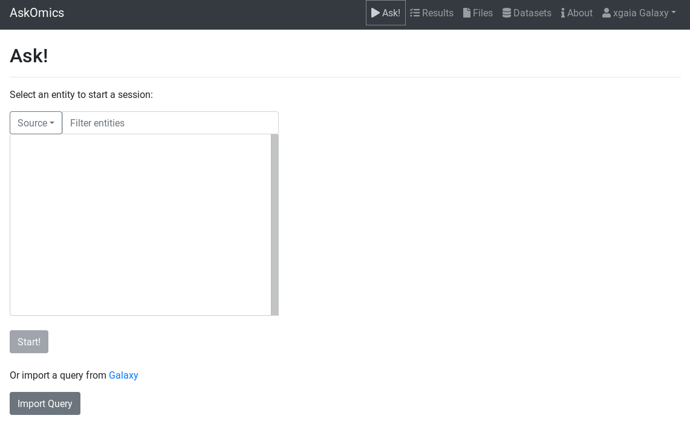Figure 1: AskOmics home page
You can see that there is no data available yet. It’s because data needs to be integrated: it is the next step.
Integrate input files into AskOmics
AskOmics conversion into RDF is called integration.
On the Files page (link at the top of the page), you will see the files you uploaded from Galaxy. We will now integrate all these files.
hands_on Hands-on: Integrate data
Got to the Files page
Select all the input files
Click on the Integrate button
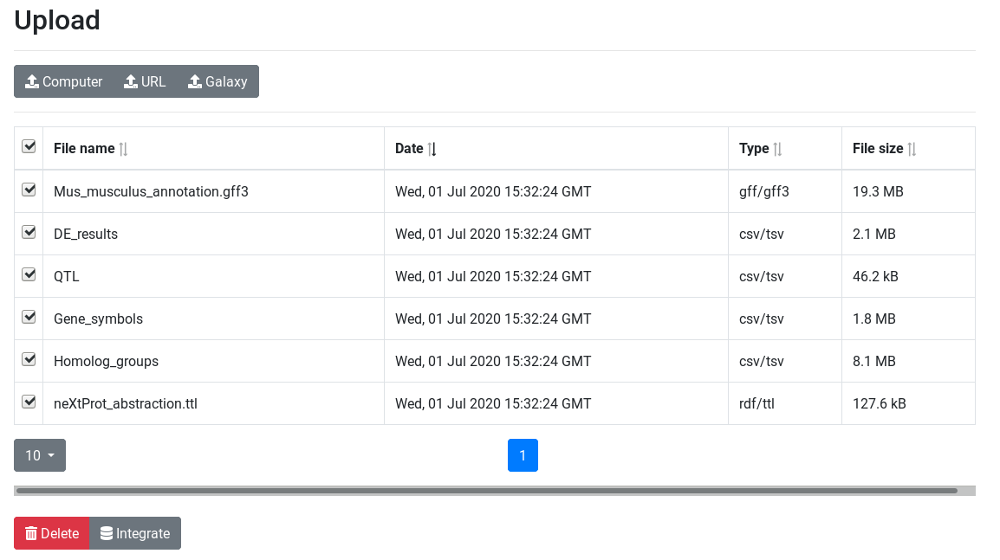Figure 2: AskOmics files page
You will land on the Integrate page that shows a preview of the data present in each selected file, depending of its data type.
Integrate GFF files
The GFF preview shows the entities that the file contains. We need to select the entities we want to be integrated.
The Mus musculus annotation file we’re using contains gene and mRNA entities, and we will need both in the rest of the tutorial.
The TSV preview shows an HTML table representing the first lines of the TSV file. During integration, AskOmics will convert the file using the header.
The first column of a TSV file will be the entity name. Other columns of the file will be attributes of the entity. Labels of the entity and attributes will be set by the header. Each label can be edited by clicking on it.
Entity and attributes can have special types. The types are defined with the select box below the header. An entity can be a start entity or an entity. A start entity means that the entity may be used to start a query on the AskOmics homepage.
Attributes can take the following types:
Numeric: if all the values of the column are numeric
Text: if all the values are strings
Category: if there is a limited number of repeated values (e.g. ‘green’, ‘yellow’ and ‘red’, each one found in multiple lines)
If the entity describes a locatable element on a genome:
Reference: chromosome
Strand: strand
Start: start position
End: end position
A column can also represent a relation between the entity to another. In this case, the header have to be named relationName@TargetedEntity and the type Directed or Symetric relation. A Directed relation is a relation from this entity to the targeted one (e.g. A is B’s father, but B is not A’s father). A Symetric relation is a relation that works in both directions (e.g. A loves B, and B loves A).
hands_on Hands-on: Integrate DE results
Search for DE results (preview)
Edit attribute names and types:
change ENTREZ ID to Differential Expression and set type to start entity
change SYMBOL to linkedTo@Gene Symbol and set type to Symetric relation
change GENENAME to name and set type to text
Keep the other column names and set their types to numeric
Integrate (private dataset)
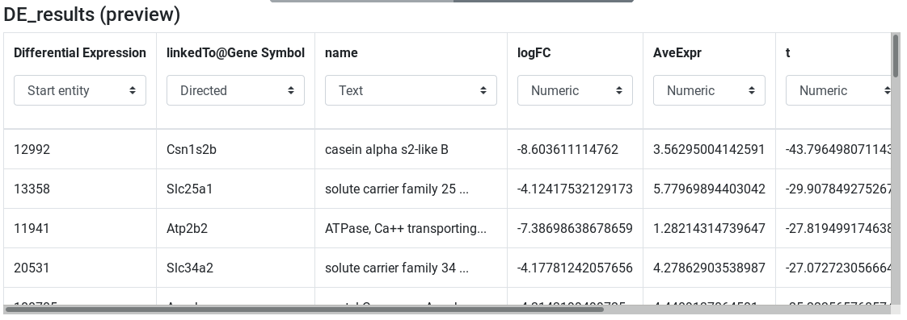Figure 4: DE results preview
hands_on Hands-on: Integrate Gene symbols
Search for Gene symbols (preview)
Edit attribute names and types:
change symbol to Gene Symbol and set type to entity
change ensembl to linkedTo@gene and set type to Symetric relation
Click on the Integrate (private dataset) button
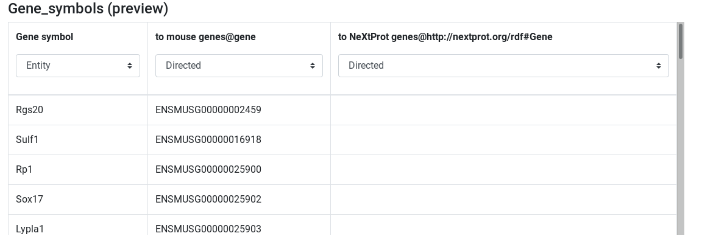Figure 5: Symbol to Ensembl preview
hands_on Hands-on: Integrate QTL
Search for QTL (preview)
Edit attribute names and types:
change Input to QTL and set type to start entity
set Chr type to Reference
set Start type to Start
set End type to End
Click on the Integrate (private dataset) button
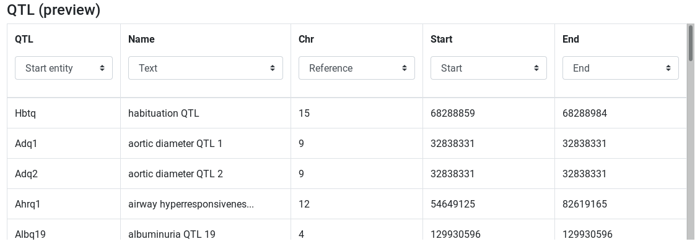Figure 6: QTL preview
hands_on Hands-on: Integrate Homolog groups
Search for Homolog groups (preview)
Edit attribute names and types:
change HomoloGene ID to Homolog Group and set type to start entity
set Common Organism Name type to category
set Chr type to Reference
change Symbol to linkedTo@Gene Symbol and set type to Directed relation
Keep the other column names and set their types to text
Click on the Integrate (private dataset) button
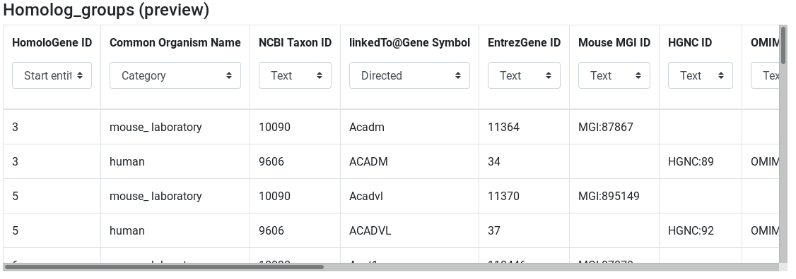Figure 7: Homolog groups preview
Integration of RDF files
The last dataset we want to integrate is the neXtProt abstraction. This file contains some RDF data that instructs AskOmics how to communicate with a remote RDF database containing neXtProt data.
hands_on Hands-on: Integrate neXtProt abstraction
Search for neXtProt abstraction (preview)
Check that Distant endpoint is set to https://sparql.nextprot.org/sparql in advanced options
Click on the Integrate (private dataset) button
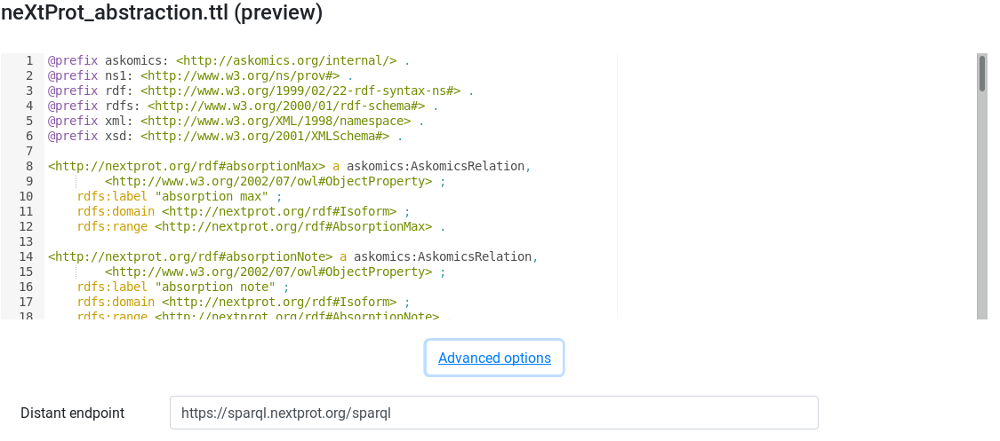Figure 8: neXtProt abstraction preview
Monitor integration
Integration can take some time depending on the file size. The Datasets page shows the progress.
hands_on Hands-on: track integration progress
Go to the Dataset page
Wait for all datasets to be in success state
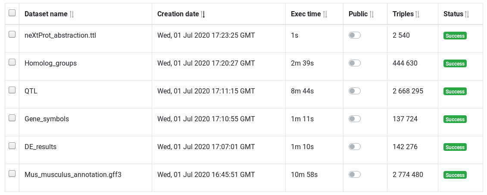Figure 9: Datasets table
Query
Once all the data of interest is integrated (converted to RDF), its time to query them. Querying RDF data is done by using the SPARQL language. Fortunately, AskOmics provides a user-friendly interface to build SPARQL queries without having to learn the SPARQL language.
Query builder overview
Simple query
The first step to build a query is to choose a start point for the query.
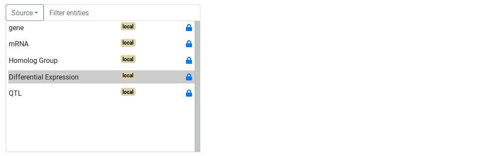Figure 10: ask page
hands_on Hands-on: Start a query
Go to the Ask! page
Select the Differential Expression entity
Start!
Once the start entity is chosen, the query builder is displayed.
The query builder is composed of a graph. Nodes represents entities and links represents relations between entities. The selected entity is surrounded by a red circle. Links and other entities are dotted and lighter because there are not instantiated.
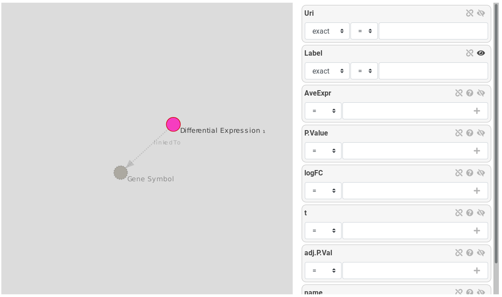Figure 11: Query builder, Differential Expression is the selected entity, Gene Symbol is a suggested entity
On the right, attributes of the selected entity are displayed as attribute boxes. Each box has an eye icon: an opened eye means the attribute will be displayed on the results.
hands_on Hands-on: Ask for all Differential Expression and display some attributes
Display logFC and adj.P.val by clicking on the eye icon
Run & preview
Run & preview launch the query with a limit of 30 rows returned. We use this button to get an idea of the results returned.
Filter on attributes
Next query will search for all over-expressed genes. Genes are considered over-expressed if the log fold change is > 2. We are only interested by significant results (Adj P value ≤ 0.05)
Back to the query builder,
hands_on Hands-on: Filter attributes to get significant over-expressed genes
Filter logFC with > 2
Filter adj.P.val with ≤ 0.05
Run & preview
The preview shows only significantly over-expressed genes.
Filter on relations
Now that we have found our genes of interest, we will link these genes to the reference genome to get information about their location.
To constraint on relation, we have to click on suggested nodes, linked to our entity of interest.
hands_on Hands-on: Link De results to gene using Gene Symbol
First, hide Label, logFC and adj.P.val of Differential Expression using the eye icon
Instantiate Gene Symbol by clicking on the suggested node, and hide his Label using the eye icon
Instantiate gene by clicking on the gene node
Run & preview
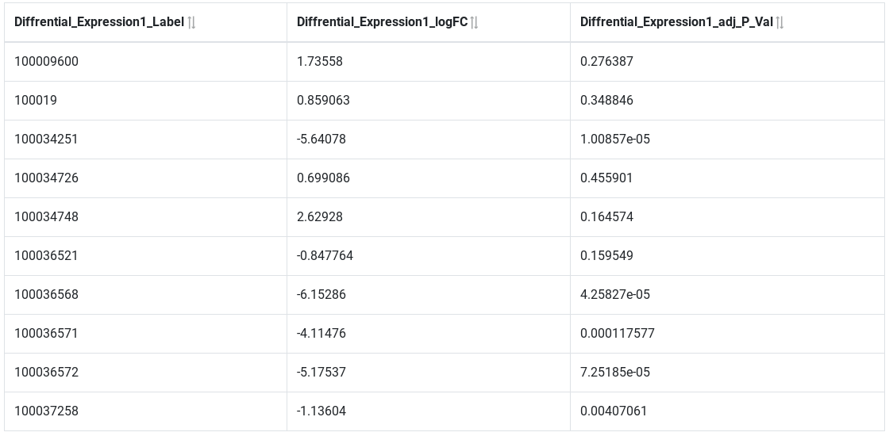Figure 12: Results preview
Results now show the Ensembl id of our over-expressed genes. We have now access to all the information about the gene entity contained in the GFF file. For example, we can filter on chromosome and display chromosome and strand to get information about gene location.
hands_on Hands-on: Filter gene
Show reference and strand using the eye icon
Filter reference by selecting X chromosome
Filter strand by selecting + strand
Run & preview
Query on the position of elements on the genome.
AskOmics is able to perform special queries between entities that are locatable. These queries are:
Entities overlapping another one
Entities included in another entity
details FALDO ontology
The FALDO ontology describes sequence feature positions and regions. AskOmics uses FALDO ontology to represent entity positions. GFF are using FALDO, as well as TSV entities with chromosome, strand, start and end.
On the query builder interface, locatable entities are represented with a green circle and relations based on location are represented as green arrow.
hands_on Hands-on: Filter gene
First, remove the reference filter (unselect X using ctrl+click)
Remove the strand filter (unselect + using ctrl+click)
Hide referencestrand using the eye
Instantiate QTL
Click on the link between gene and QTL to edit the relation
Check that the relation is geneincluded inQTLon the same reference with strict ticked
Run & preview
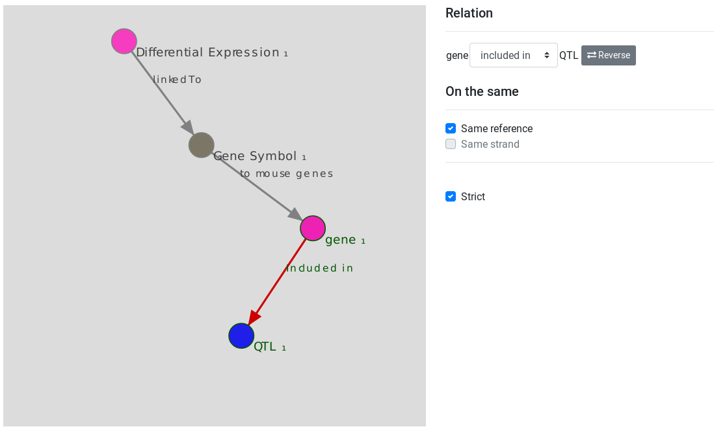Figure 13: FALDO query
To go further, we can filter on QTL to refine the results.
hands_on Hands-on: Filter gene
Go back to the QTL node
Show the Name attribute using the eye icon
Filter the name with a regexp with growth
Run & preview
From now, our query is “All Genes that are over-expressed (logFC > 2 and FDR ≤ 0.05) and located on a QTL that is related to growth”. We can save this results with the Run & save button.
hands_on Hands-on: Save a result
Run & save
Use neXtProt distant data to refine results
neXtProt is a comprehensive human-centric discovery platform, offering its users a seamless integration of and navigation through protein-related data. It offer a SPARQL endpoint that can be interrogated with AskOmics.
Since we added the neXtProt abstraction into our AskOmics instance, we can link our data to neXtProt.
hands_on Hands-on: Find human homolog genes
Go back to the gene node
instantiate Gene Symbol and hide his Label
Instantiate Homolog Group, hide his label and filter his Common Organism Name with human
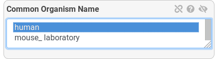Figure 14: Organism name filter
Instantiate another Gene Symbol and hide his Label
Finally, follow the to neXtProt Gene link and instantiate Gene
Run & preview
The query we’ve just built asks for the human homologs of our over-expressed genes. We use the Gene Symbol to get information from the neXtProt database. AskOmics converts the query into small SPARQL subqueries and send them to the local database and to the remote neXtProt endpoint.
Now we are linked to the neXtProt database, we can obtain information about the proteins encoded by these genes, as well as their location in the cell.
hands_on Hands-on: Get the protein and their location
Instantiate Entry
Instantiate Isoform and hide the Label
Many nodes are connected to Isoform. Use the Filter links field to get only node that are linked with a link named location
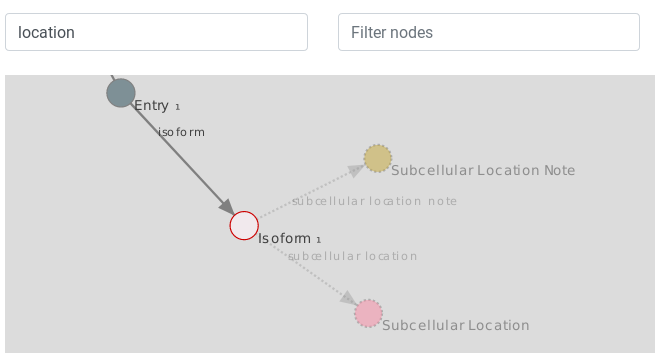Figure 15: Filter links
Instantiate the Subcellular Location node and hide Label
Use the Filter node field to filter nodes that a named Location
Instantiate Uniprot subcellular Location CV (you can use the node filter)
Run & preview
Finally, our query is “All genes that are over-expressed and located on a QTL that is related to growth, their human homologs and the location of the proteins coded by this genes”. We will save it to the results.
hands_on Hands-on: Save a result
Run & save
Results management
The results page displays the saved queries. Queries are sorted by creation date. At the end of the table, action buttons can be used to preview the result, download or send it to Galaxy history.
hands_on Hands-on: Edit query name
Go to the Results page
Use the Preview button to check the result
Click on the name to rename the two query with Over-expressed genes on a growth QTL and Over-expressed genes on a growth QTL, their human homologs and protein location (press enter key to validate)
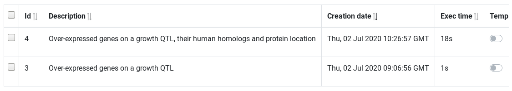Figure 16: Results table
The Action column contain button to perform certain action:
Preview: show a results preview on the bottom of the table
Download: Download the results (TSV file)
Edit: Edit the query with the query builder
SPARQL: edit the query with a SPARQL editor for advanced users
Send results to Galaxy: send the results (TSV file) to the most recently used Galaxy history
Send query to Galaxy: send the query representation (json file) to the most recently used Galaxy history
hands_on Hands-on: Send results to Galaxy
Click on Send results to Galaxy on each query to send them to the last used Galaxy history
Get back to galaxy and wait for the dataset (reload if needed)
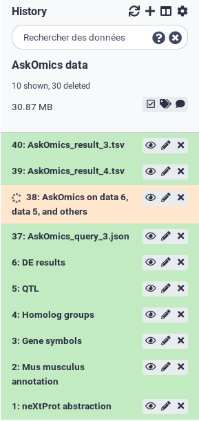Figure 17:Galaxy history with the two results
Now that you have used AskOmics to generate this final tabular file, you can continue analysing it with other Galaxy tools.
Conclusion
In this tutorial we have seen how to use AskOmics Interactive Tool. We launch the tools with a set of input files, then we have integrated these files into RDF and finally, we built complex queries over this local datasets and neXtProt to answer a biological question.
keypoints Key points
AskOmics helps to integrate multiple data sources into an RDF database without prior knowledge in the Semantic Web
It can also be connected to external SPARQL endpoints, such as neXtProt
AskOmics helps to perform complex SPARQL queries without knowing SPARQL, using a user-friendly interface
Useful literature
Further information, including links to documentation and original publications, regarding the tools, analysis techniques and the interpretation of results described in this tutorial can be found here.
Feedback
Did you use this material as an instructor? Feel free to give us feedback on how it went.
Batut et al., 2018 Community-Driven Data Analysis Training for Biology Cell Systems 10.1016/j.cels.2018.05.012
details BibTeX
@misc{transcriptomics-rna-seq-analysis-with-askomics-it,
author = "Xavier Garnier and Anthony Bretaudeau and Anne Siegel and Olivier Dameron",
title = "RNA-Seq analysis with AskOmics Interactive Tool (Galaxy Training Materials)",
year = "2021",
month = "01",
day = "06"
url = "\url{/training-material/topics/transcriptomics/tutorials/rna-seq-analysis-with-askomics-it/tutorial.html}",
note = "[Online; accessed TODAY]"
}
@article{Batut_2018,
doi = {10.1016/j.cels.2018.05.012},
url = {https://doi.org/10.1016%2Fj.cels.2018.05.012},
year = 2018,
month = {jun},
publisher = {Elsevier {BV}},
volume = {6},
number = {6},
pages = {752--758.e1},
author = {B{\'{e}}r{\'{e}}nice Batut and Saskia Hiltemann and Andrea Bagnacani and Dannon Baker and Vivek Bhardwaj and Clemens Blank and Anthony Bretaudeau and Loraine Brillet-Gu{\'{e}}guen and Martin {\v{C}}ech and John Chilton and Dave Clements and Olivia Doppelt-Azeroual and Anika Erxleben and Mallory Ann Freeberg and Simon Gladman and Youri Hoogstrate and Hans-Rudolf Hotz and Torsten Houwaart and Pratik Jagtap and Delphine Larivi{\`{e}}re and Gildas Le Corguill{\'{e}} and Thomas Manke and Fabien Mareuil and Fidel Ram{\'{\i}}rez and Devon Ryan and Florian Christoph Sigloch and Nicola Soranzo and Joachim Wolff and Pavankumar Videm and Markus Wolfien and Aisanjiang Wubuli and Dilmurat Yusuf and James Taylor and Rolf Backofen and Anton Nekrutenko and Björn Grüning},
title = {Community-Driven Data Analysis Training for Biology},
journal = {Cell Systems}
}
congratulations Congratulations on successfully completing this tutorial!
 Xavier Garnier
Xavier Garnier Anthony Bretaudeau
Anthony Bretaudeau Anne Siegel
Anne Siegel Olivier Dameron
Olivier Dameron